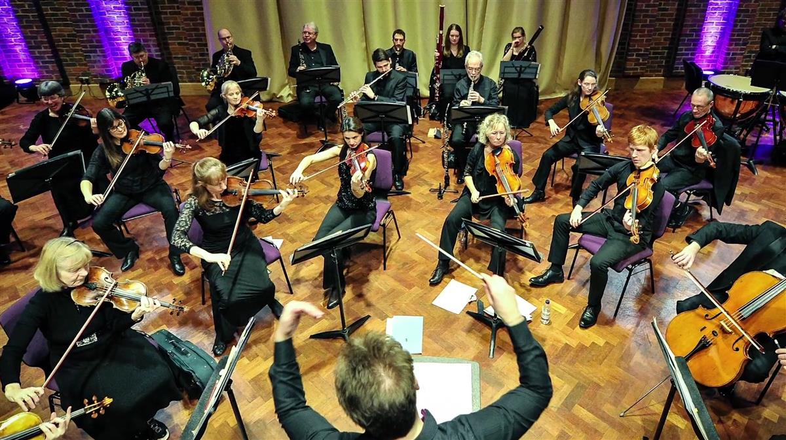
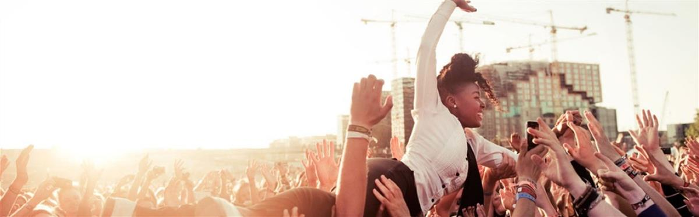
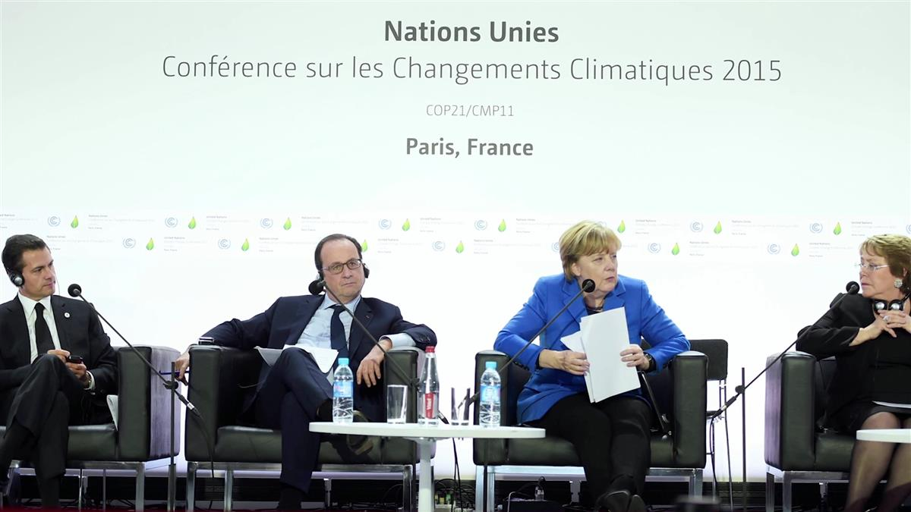
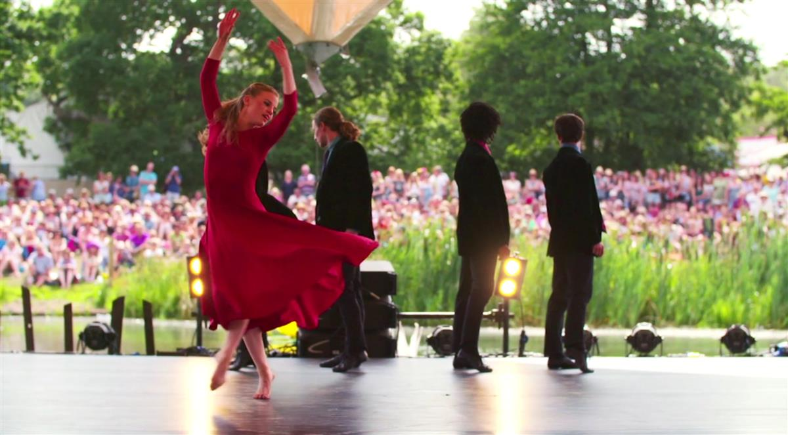

BANNER IMAGE: ART ON THE MOVE - TOWARDS GREENER TOURING
Julie's Bicycle - Sustaining Creativity
In October 2006, Alison (not Julie) got on her bike to meet some friends from the music industry for dinner at a restaurant called Julie’s. That night together they dreamed up a vision of the future where festivals were powered by solar, venues were off-grid and covered in flowers, museums were community energy providers, artists were united as beacons for change.
About Us
Julie’s Bicycle is a London based charity that supports the creative community to act on climate change and environmental sustainability. We believe that the creative community is uniquely placed to transform the conversation around climate change and translate it into action.
We provide the creative community with the skills to act, using their creativity to influence one another, audiences and the wider movement. We run a rich programme of events, free resources and public speaking engagements, which contribute to national and international climate change policy development.
Julie’s Bicycle supports the Paris Agreement goal to limit global warming to 1.5 degrees Celsius by focusing on energy, the major source of carbon emissions for the cultural sector. More than 2,000 companies use the Creative IG Tools, our suite of carbon calculators, and our certification scheme, Creative Green, is the recognised benchmark for sustainability achievement within the creative industries.
We have a deep engagement with the arts and cultural sector, working with organisations and independent professionals across the UK and internationally to embed environmental sustainability into their operations, creative work and business practice.
We have two key objectives:
- Advocate to and for culture to publicly inspire action on climate change and sustainability. We will equip cultural professionals and artists with the knowledge and confidence to speak out and together on this issue, using their creativity to influence one another, audiences, and the wider movement.
- Support the Paris Agreement Goal to limit global warming to below 2 degrees by focusing on energy, the major source of carbon emissions for the cultural sector.
READ MORE: JULIE'S BICYCLE STORY
Open on original site ↗IMAGES FROM CASE STUDIES




SOURCE: JULIE'S BICYCLE